Objetivo
Apresentar formas de interação entre pessoas e sistemas computacionais, partindo das interfaces mais textuais até as mais naturais.
Algumas categorias podem se sobrepor: um menu visual, por exemplo, também pode fazer parte de uma GUI.
Instituto Federal de Educação, Ciência e Tecnologia de Roraima
Curso Superior de Tecnologia em Análise e Desenvolvimento de Sistemas
Pesquisa, desenvolvimento web, acessibilidade e qualidade de software
Boa Vista — Roraima · 2026
Apresentação
Apresentar formas de interação entre pessoas e sistemas computacionais, partindo das interfaces mais textuais até as mais naturais.
Algumas categorias podem se sobrepor: um menu visual, por exemplo, também pode fazer parte de uma GUI.
Foram consultados artigos científicos publicados entre 2022 e 2025, dentro do recorte dos últimos cinco anos.
Também foram usados documentos normativos do W3C e da ISO para orientar acessibilidade e qualidade.
06
Interface visual
A GUI permite controlar um sistema por elementos visuais, como janelas, ícones, botões, menus e ponteiros.
O usuário reconhece objetos e ações na tela, selecionando comandos por mouse, teclado ou toque.
O feedback visual mostra estados, resultados, erros e possibilidades de ação.
Vantagens: aprendizagem mais rápida, exploração visual e representação direta de tarefas.
Limitações: excesso de elementos aumenta a carga cognitiva e interfaces mal rotuladas prejudicam leitores de tela.
O estudo do GRASS GIS analisou um redesenho comunitário de GUI em software geoespacial livre, com participação de usuários e desenvolvedores.
O resultado mostra uma vantagem: quando a GUI usa linguagem clara e é testada com usuários reais, ela reduz atrito em sistemas técnicos complexos.
Fonte científica: Karlovska et al. (2023) [1].
Esta própria página, sistemas Windows, Android, navegadores, editores de imagem e painéis administrativos.
Também aparecem em sistemas corporativos densos, como ERPs antigos, telas contábeis e cadastros com muitos campos simultâneos.
Uma GUI com muitas abas, tabelas e campos pode exigir memorização e aumentar erros, mesmo sendo visual.
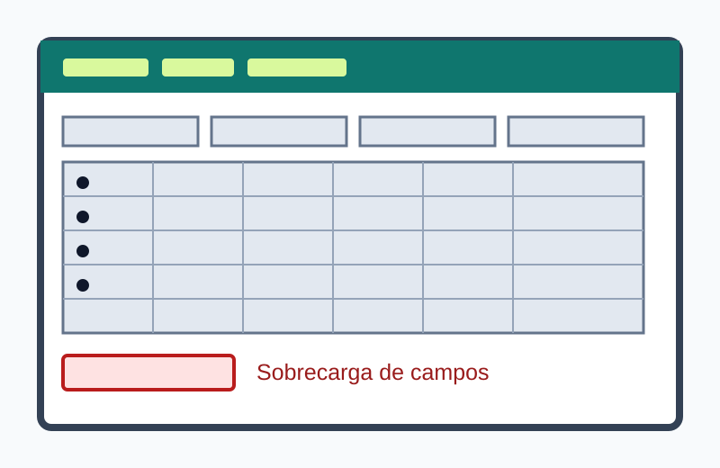
03
Interface textual
A CLI recebe instruções digitadas em uma linguagem de comandos e apresenta resultados principalmente em texto.
O usuário informa um comando, opções e argumentos; o interpretador executa a operação e retorna uma saída.
Histórico, autocompletar, documentação e mensagens de erro auxiliam a interação.
Vantagens: velocidade para especialistas, automação por scripts, precisão e baixo consumo de recursos.
Limitações: exige memorização, possui curva de aprendizagem e erros de sintaxe podem bloquear tarefas.
O estudo avaliou ferramentas de análise estática usadas por desenvolvedores e identificou problemas de mensagens, documentação e orientação.
Isso mostra uma limitação da CLI: ela é eficiente para especialistas, mas depende de comandos compreensíveis, ajuda clara e retorno útil quando algo falha.
Fonte científica: Nachtigall, Schlichtig e Bodden (2022) [2].
Bash, PowerShell, Git, PNPM, Docker CLI, ferramentas de servidores e ambientes de desenvolvimento.
Quando a mensagem de erro não orienta a correção, a CLI força tentativa e erro e aumenta a dependência de documentação externa.
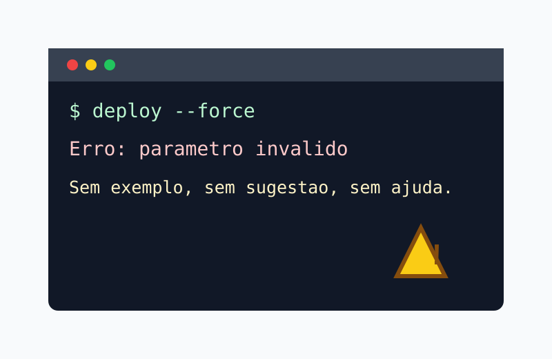
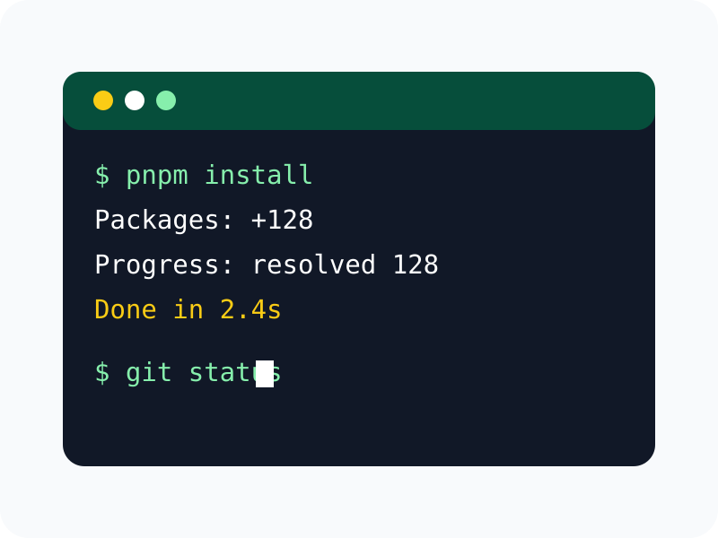
04
Escolha estruturada
A interface orientada por menu apresenta opções organizadas para que o usuário escolha um caminho ou comando.
As ações são agrupadas em listas, categorias ou níveis hierárquicos, reduzindo a necessidade de memorizar comandos.
A navegação pode ocorrer por teclado, toque, controle remoto, voz ou leitor de tela.
Quando aparece em telas visuais, o menu pode ser parte de uma GUI; em terminais e centrais telefônicas, funciona como padrão próprio.
Vantagens: previsibilidade, aprendizagem simples e prevenção de entradas inválidas.
Limitações: menus profundos atrasam tarefas e rótulos ambíguos dificultam encontrar a opção correta.
O estudo modelou a seleção de menus por toque feita por usuários cegos e mostrou que posição, memória, gestos e feedback influenciam o desempenho.
A evidência aponta um problema: menus não são acessíveis apenas por terem opções; eles precisam de estrutura previsível e retorno claro para leitores de tela.
Fonte científica: Li et al. (2023) [3].
Caixas eletrônicos, centrais telefônicas, smart TVs, terminais de atendimento e menus de configuração.
Menus profundos escondem ações importantes e obrigam o usuário a lembrar caminhos longos até a opção correta.
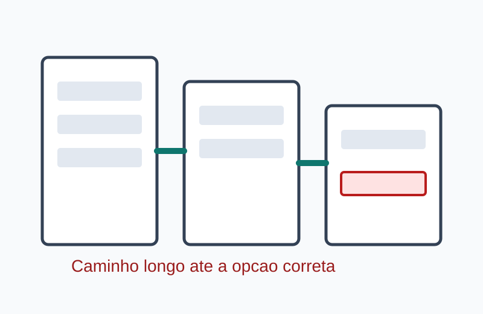
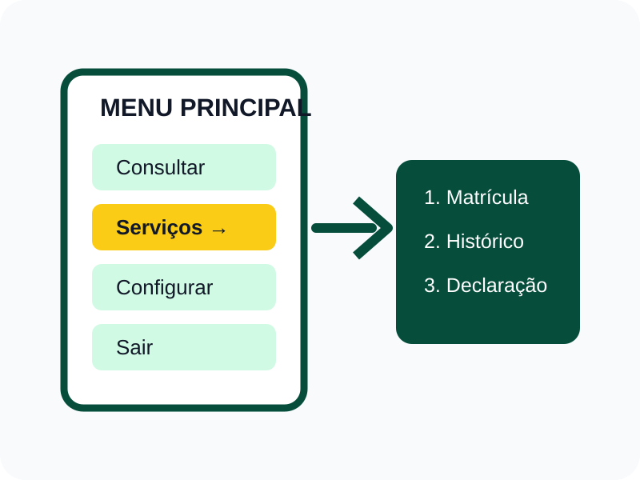
07
Interação direta
A Touch UI permite agir diretamente sobre elementos exibidos em uma tela sensível ao toque.
Toques, deslizamentos, pinças e pressões são interpretados como comandos sobre objetos visuais.
Alvos amplos, espaçamento adequado e resposta imediata reduzem erros de seleção.
Vantagens: interação direta, portabilidade, rapidez e suporte a gestos.
Limitações: ausência de referência tátil, oclusão pelos dedos e barreiras para pessoas com limitações motoras ou visuais.
O protótipo Toucha11y permitiu que pessoas cegas operassem quiosques touchscreen originalmente inacessíveis por meio de um dispositivo auxiliar e aplicativo.
Isso evidencia uma limitação da Touch UI: a interação direta favorece quem enxerga a tela, mas pode excluir usuários quando não há alternativa acessível.
Fonte científica: Li et al. (2023) [4].
Smartphones, tablets, totens de autoatendimento, painéis automotivos e mesas interativas.
Totens apenas touchscreen podem impedir uso independente quando não oferecem áudio, leitor de tela ou alternativa física.
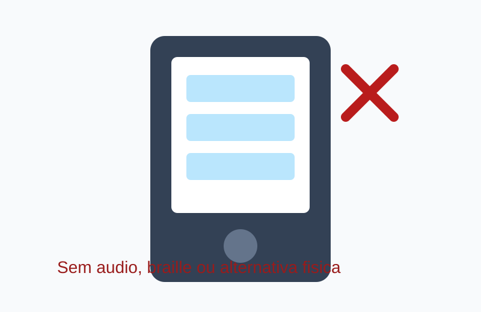
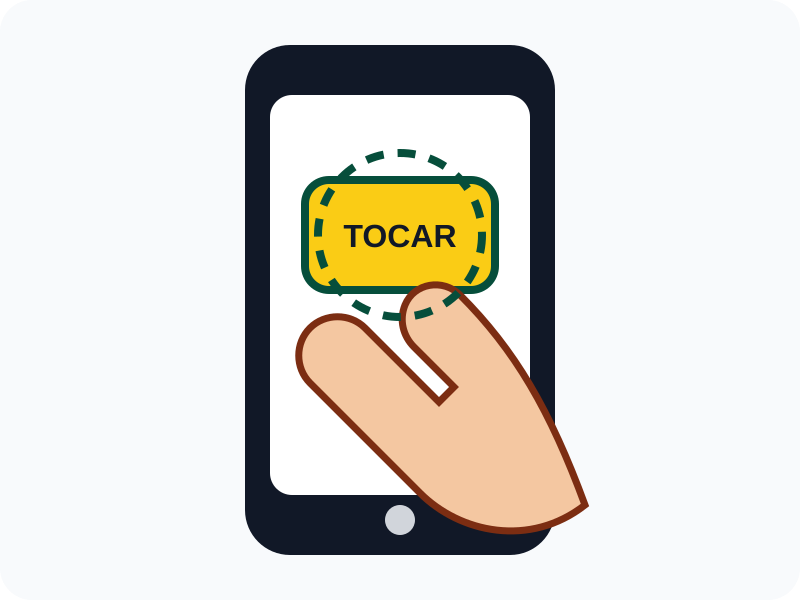
08
Interação falada
A VUI permite emitir comandos e receber respostas por fala, sem depender continuamente de tela ou teclado.
O sistema reconhece a fala, identifica a intenção, executa a ação e produz uma resposta sonora ou multimodal.
Confirmações e possibilidade de correção são essenciais em tarefas críticas.
Vantagens: uso sem as mãos, rapidez, apoio à acessibilidade e interação em movimento.
Limitações: ruído, sotaques, privacidade, baixa descobribilidade e falhas de reconhecimento.
A revisão sistemática analisou 125 estudos sobre experiência do usuário em VUI e organizou desafios como avaliação, personalização, privacidade e diferenças culturais.
O resultado é duplo: voz traz vantagem em interação sem as mãos, mas ainda sofre com reconhecimento, contexto, privacidade e falta de métricas padronizadas.
Fonte científica: Deshmukh e Chalmeta (2024) [5].
Assistentes virtuais, casas inteligentes, navegação veicular, atendimento telefônico e tecnologias assistivas.
Ambientes barulhentos, sotaques e privacidade podem transformar uma vantagem da voz em erro de reconhecimento ou constrangimento.
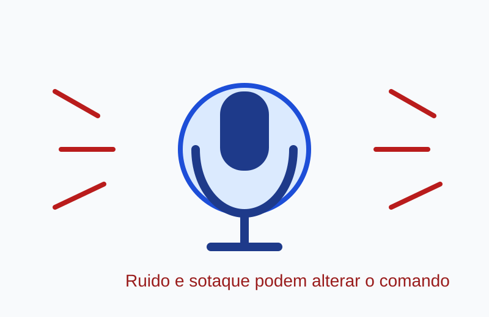
05
Entrada estruturada
A interface baseada em formulário coleta, valida e organiza informações em campos previamente definidos.
Rótulos orientam o preenchimento de textos, seleções, datas, caixas de marcação e outros controles.
Validação, instruções e mensagens de erro ajudam o usuário a corrigir os dados.
Vantagens: dados padronizados, validação automática, rastreabilidade e integração com bancos de dados.
Limitações: formulários extensos cansam, erros genéricos confundem e campos sem rótulo prejudicam tecnologias assistivas.
O estudo participativo reuniu usuários com deficiência visual, especialistas e literatura para propor um formulário universal de feedback de acessibilidade.
O resultado mostra uma vantagem dos formulários bem projetados: eles padronizam dados úteis sem impedir que a pessoa descreva a barreira vivida.
Fonte científica: Wegener et al. (2024) [6].
Cadastros, inscrições, prontuários, compras, pesquisas, sistemas acadêmicos e solicitações governamentais.
Formulários longos e mensagens genéricas de erro cansam o usuário e dificultam saber qual campo precisa ser corrigido.
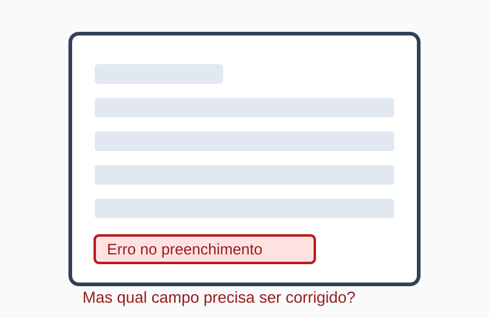
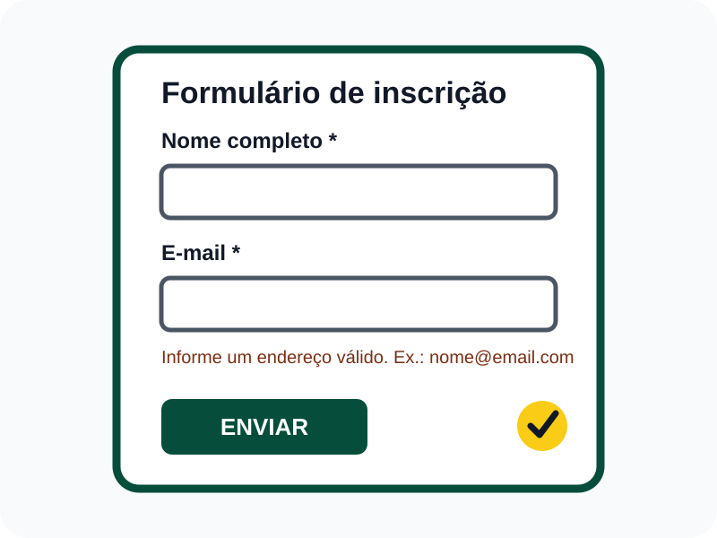
09
Linguagem humana
A NLUI interpreta frases humanas em texto ou voz para realizar tarefas e manter uma interação conversacional.
O sistema processa a mensagem, identifica intenção, contexto e entidades, produzindo uma resposta ou ação.
Diferente de uma CLI, a entrada pode variar sem seguir uma sintaxe rígida.
Vantagens: baixa barreira inicial, flexibilidade e acesso a funções complexas por perguntas comuns.
Limitações: ambiguidades, respostas incorretas, contexto perdido, vieses e expectativa exagerada sobre a capacidade do sistema.
O estudo revisou práticas de design conversacional e avaliou diretrizes para linguagem, reparo de falhas, transparência e controle do usuário.
A evidência mostra uma recomendação: NLUI precisa assumir que ambiguidades acontecem e oferecer caminhos claros para corrigir respostas ou intenções.
Fonte científica: Silva e Canedo (2023) [7].
Chatbots, assistentes de IA, pesquisa conversacional, suporte ao cliente e consulta a sistemas por texto.
Uma frase natural pode ter mais de uma interpretação; por isso, confirmações e opções de correção são parte essencial do projeto.
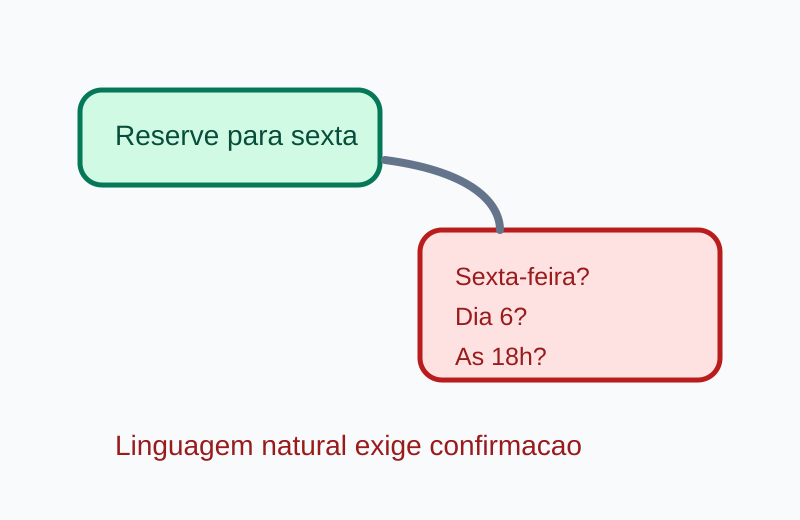
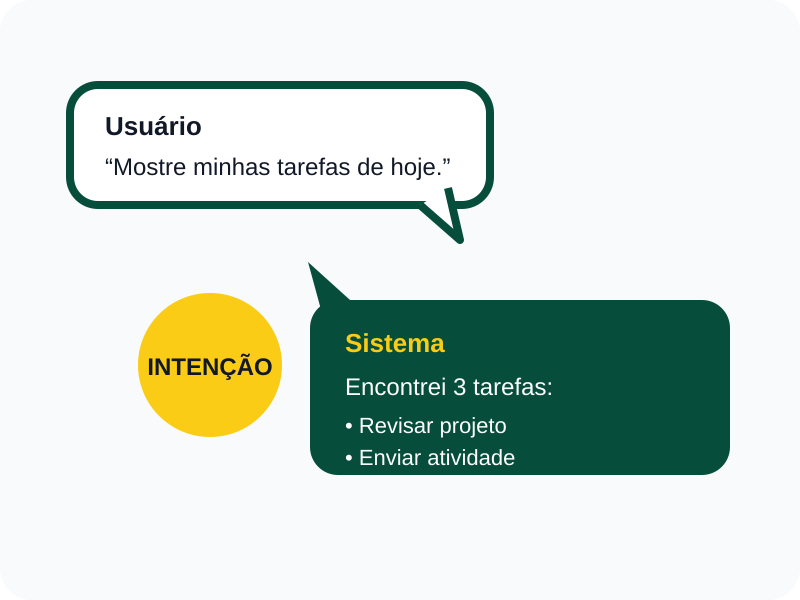
10
Projeto e qualidade
Este item não é um tipo de entrada, mas um conjunto de critérios que orienta como uma interface deve ser estruturada e avaliada.
Hierarquia de títulos, navegação previsível, agrupamento coerente, consistência visual e adaptação a diferentes telas.
Os componentes precisam comunicar nome, função, estado, resultado e alternativa em caso de erro.
O conteúdo deve ser perceptível, operável, compreensível e robusto, conforme os princípios da WCAG.
Testes automáticos ajudam, mas avaliação humana e participação de pessoas com deficiência continuam necessárias.
A revisão sistemática analisou como requisitos de acessibilidade entram no desenvolvimento de sistemas de informação.
O problema encontrado é que a acessibilidade costuma aparecer mais no levantamento e nos testes; o ideal é acompanhá-la durante todo o ciclo do projeto.
Fonte científica: Teixeira, Eusébio e Teixeira (2024) [8].
O projeto prioriza adequação funcional, usabilidade, eficiência de desempenho, compatibilidade e manutenibilidade.
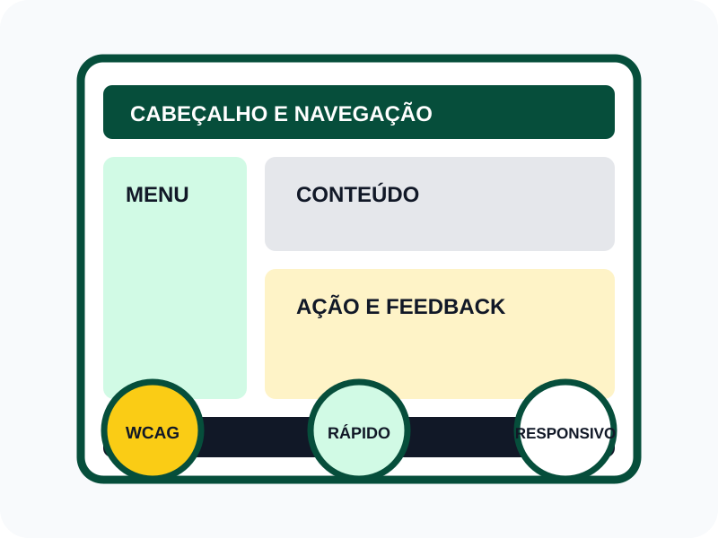
Aplicação prática
Fontes consultadas
Referências organizadas em formato APA. Os links abrem em uma nova aba.